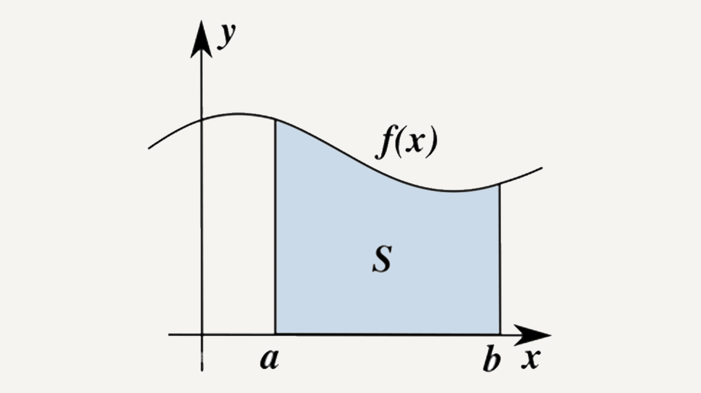
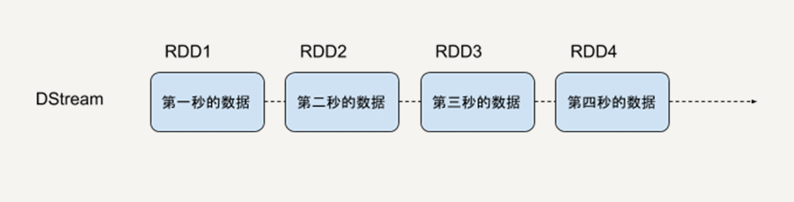
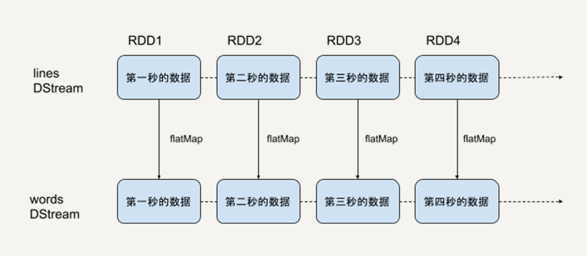
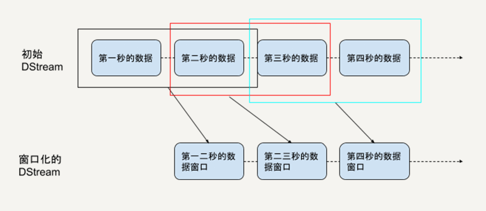

- 00 开篇词 从这里开始，带你走上硅谷一线系统架构师之路.md.html
- 01 为什么MapReduce会被硅谷一线公司淘汰？.md.html
- 02 MapReduce后谁主沉浮：怎样设计下一代数据处理技术？.md.html
- 03 大规模数据处理初体验：怎样实现大型电商热销榜？.md.html
- 04 分布式系统（上）：学会用服务等级协议SLA来评估你的系统.md.html
- 05 分布式系统（下）：架构师不得不知的三大指标.md.html
- 06 如何区分批处理还是流处理？.md.html
- 07 Workflow设计模式：让你在大规模数据世界中君临天下.md.html
- 08 发布_订阅模式：流处理架构中的瑞士军刀.md.html
- 09 CAP定理：三选二，架构师必须学会的取舍.md.html
- 10 Lambda架构：Twitter亿级实时数据分析架构背后的倚天剑.md.html
- 11 Kappa架构：利用Kafka锻造的屠龙刀.md.html
- 12 我们为什么需要Spark？.md.html
- 13 弹性分布式数据集：Spark大厦的地基（上）.md.html
- 14 弹性分布式数据集：Spark大厦的地基（下）.md.html
- 15 Spark SQL：Spark数据查询的利器.md.html
- 16 Spark Streaming：Spark的实时流计算API.md.html
- 17 Structured Streaming：如何用DataFrame API进行实时数据分析_.md.html
- 18 Word Count：从零开始运行你的第一个Spark应用.md.html
- 19 综合案例实战：处理加州房屋信息，构建线性回归模型.md.html
- 20 流处理案例实战：分析纽约市出租车载客信息.md.html
- 21 深入对比Spark与Flink：帮你系统设计两开花.md.html
- 22 Apache Beam的前世今生.md.html
- 23 站在Google的肩膀上学习Beam编程模型.md.html
- 24 PCollection：为什么Beam要如此抽象封装数据？.md.html
- 25 Transform：Beam数据转换操作的抽象方法.md.html
- 26 Pipeline：Beam如何抽象多步骤的数据流水线？.md.html
- 27 Pipeline I_O_ Beam数据中转的设计模式.md.html
- 28 如何设计创建好一个Beam Pipeline？.md.html
- 29 如何测试Beam Pipeline？.md.html
- 30 Apache Beam实战冲刺：Beam如何run everywhere_.md.html
- 31 WordCount Beam Pipeline实战.md.html
- 32 Beam Window：打通流处理的任督二脉.md.html
- 33 横看成岭侧成峰：再战Streaming WordCount.md.html
- 34 Amazon热销榜Beam Pipeline实战.md.html
- 35 Facebook游戏实时流处理Beam Pipeline实战（上）.md.html
- 36 Facebook游戏实时流处理Beam Pipeline实战（下）.md.html
- 37 5G时代，如何处理超大规模物联网数据.md.html
- 38 大规模数据处理在深度学习中如何应用？.md.html
- 39 从SQL到Streaming SQL：突破静态数据查询的次元.md.html
- 40 大规模数据处理未来之路.md.html
- FAQ第一期 学习大规模数据处理需要什么基础？.md.html
- FAQ第三期 Apache Beam基础答疑.md.html
- FAQ第二期 Spark案例实战答疑.md.html
- 加油站 Practice makes perfect！.md.html
- 结束语 世间所有的相遇，都是久别重逢.md.html
- 捐赠
16 Spark Streaming：Spark的实时流计算API
你好，我是蔡元楠。
今天我要与你分享的内容是“Spark Streaming”。
通过上一讲的内容，我们深入了解了Spark SQL API。通过它，我们可以像查询关系型数据库一样查询Spark的数据，并且对原生数据做相应的转换和动作。
但是，无论是DataFrame API还是DataSet API，都是基于批处理模式对静态数据进行处理的。比如，在每天某个特定的时间对一天的日志进行处理分析。
在第二章中你已经知道了，批处理和流处理是大数据处理最常见的两个场景。那么作为当下最流行的大数据处理平台之一，Spark是否支持流处理呢？
答案是肯定的。
早在2013年，Spark的流处理组件Spark Streaming就发布了。之后经过好几年的迭代与改进，现在的Spark Streaming已经非常成熟，在业界应用十分广泛。
今天就让我们一起揭开Spark Streaming的神秘面纱，让它成为我们手中的利器。
Spark Streaming的原理
Spark Streaming的原理与微积分的思想很类似。
在大学的微积分课上，你的老师一定说过，微分就是无限细分，积分就是对无限细分的每一段进行求和。它本质上把一个连续的问题转换成了无限个离散的问题。
比如，用微积分思想求下图中阴影部分S的面积。

我们可以把S无限细分成无数个小矩形，因为矩形的宽足够短，所以它顶端的边近似是一个直线。这样，把容易计算的矩形面积相加，就得到不容易直接计算的不规则图形面积。
你知道，流处理的数据是一系列连续不断变化，且无边界的。我们永远无法预测下一秒的数据是什么样。Spark Streaming用时间片拆分了无限的数据流，然后对每一个数据片用类似于批处理的方法进行处理，输出的数据也是一块一块的。如下图所示。
Spark Streaming提供一个对于流数据的抽象DStream。DStream可以由来自Apache Kafka、Flume或者HDFS的流数据生成，也可以由别的DStream经过各种转换操作得来。讲到这里，你是不是觉得内容似曾相识？
没错，底层DStream也是由很多个序列化的RDD构成，按时间片（比如一秒）切分成的每个数据单位都是一个RDD。然后，Spark核心引擎将对DStream的Transformation操作变为针对Spark中对 RDD的Transformation操作，将RDD经过操作变成中间结果保存在内存中。
之前的DataFrame和DataSet也是同样基于RDD，所以说RDD是Spark最基本的数据抽象。就像Java里的基本数据类型（Primitive Type）一样，所有的数据都可以用基本数据类型描述。
也正是因为这样，无论是DataFrame，还是DStream，都具有RDD的不可变性、分区性和容错性等特质。
所以，Spark是一个高度统一的平台，所有的高级API都有相同的性质，它们之间可以很容易地相互转化。Spark的野心就是用这一套工具统一所有数据处理的场景。
由于Spark Streaming将底层的细节封装起来了，所以对于开发者来说，只需要操作DStream就行。接下来，让我们一起学习DStream的结构以及它支持的转换操作。
DStream
下图就是DStream的内部形式，即一个连续的RDD序列，每一个RDD代表一个时间窗口的输入数据流。

对DStream的转换操作，意味着对它包含的每一个RDD进行同样的转换操作。比如下边的例子。
sc = SparkContext(master, appName)
ssc = StreamingContext(sc, 1)
lines = sc.socketTextStream("localhost", 9999)
words = lines.flatMap(lambda line: line.split(" "))

首先，我们创建了一个lines的DStream，去监听来自本机9999端口的数据流，每一个数据代表一行文本。然后，对lines进行flatMap的转换操作，把每一个文本行拆分成词语。
本质上，对一个DStream进行flatMap操作，就是对它里边的每一个RDD进行flatMap操作，生成了一系列新的RDD，构成了一个新的代表词语的DStream。
正因为DStream和RDD的关系，RDD支持的所有转换操作，DStream都支持，比如map、flatMap、filter、union等。这些操作我们在前边学习RDD时都详细介绍过，在此不做赘述。
此外，DStream还有一些特有操作，如滑动窗口操作，我们可以一起探讨。
滑动窗口操作
任何Spark Streaming的程序都要首先创建一个StreamingContext的对象，它是所有Streaming操作的入口。
比如，我们可以通过StreamingContext来创建DStream。前边提到的例子中，lines这个DStream就是由名为sc的StreamingContext创建的。
StreamingContext中最重要的参数是批处理的时间间隔，即把流数据细分成数据块的粒度。
这个时间间隔决定了流处理的延迟性，所以，需要我们根据需求和资源来权衡间隔的长度。上边的例子中，我们把输入的数据流以秒为单位划分，每一秒的数据会生成一个RDD进行运算。
有些场景中，我们需要每隔一段时间，统计过去某个时间段内的数据。比如，对热点搜索词语进行统计，每隔10秒钟输出过去60秒内排名前十位的热点词。这是流处理的一个基本应用场景，很多流处理框架如Apache Flink都有原生的支持。所以，Spark也同样支持滑动窗口操作。
从统计热点词这个例子，你可以看出滑动窗口操作有两个基本参数：
- 窗口长度（window length）：每次统计的数据的时间跨度，在例子中是60秒；
- 滑动间隔（sliding interval）：每次统计的时间间隔，在例子中是10秒。
显然，由于Spark Streaming流处理的最小时间单位就是StreamingContext的时间间隔，所以这两个参数一定是它的整数倍。

最基本的滑动窗口操作是window，它可以返回一个新的DStream，这个DStream中每个RDD代表一段时间窗口内的数据，如下例所示。
windowed_words = words.window(60, 10)
windowed_words代表的就是热词统计例子中我们所需的DStream，即它里边每一个数据块都包含过去60秒内的词语，而且这样的块每10秒钟就会生成一个。
此外，Spark Streaming还支持一些“进阶”窗口操作。如countByWindow、reduceByWindow、reduceByKeyAndWindow和countByValueAndWindow，在此不做深入讨论。
Spark Streaming的优缺点
讲了这么多Spark Streaming，不管内部实现也好，支持的API也好，我们还并不明白它的优势是什么，相比起其他流处理框架的缺点是什么。只有明白了这些，才能帮助我们在实际工作中决定是否使用Spark Streaming。
首先，Spark Streaming的优点很明显，由于它的底层是基于RDD实现的，所以RDD的优良特性在它这里都有体现。
比如，数据容错性，如果RDD 的某些分区丢失了，可以通过依赖信息重新计算恢复。
再比如运行速度，DStream同样也能通过persist()方法将数据流存放在内存中。这样做的好处是遇到需要多次迭代计算的程序时，速度优势十分明显。
而且，Spark Streaming是Spark生态的一部分。所以，它可以和Spark的核心引擎、Spark SQL、MLlib等无缝衔接。换句话说，对实时处理出来的中间数据，我们可以立即在程序中无缝进行批处理、交互式查询等操作。这个特点大大增强了Spark Streaming的优势和功能，使得基于Spark Streaming的应用程序很容易扩展。
而Spark Streaming的主要缺点是实时计算延迟较高，一般在秒的级别。这是由于Spark Streaming不支持太小的批处理的时间间隔。
在第二章中，我们讲过准实时和实时系统，无疑Spark Streaming是一个准实时系统。别的流处理框架，如Storm的延迟性就好很多，可以做到毫秒级。
小结
Spark Streaming，作为Spark中的流处理组件，把连续的流数据按时间间隔划分为一个个数据块，然后对每个数据块分别进行批处理。
在内部，每个数据块就是一个RDD，所以Spark Streaming有RDD的所有优点，处理速度快，数据容错性好，支持高度并行计算。
但是，它的实时延迟相比起别的流处理框架比较高。在实际工作中，我们还是要具体情况具体分析，选择正确的处理框架。
思考题
如果想要优化一个Spark Streaming程序，你会从哪些角度入手？
欢迎你把答案写在留言区，与我和其他同学一起讨论。
如果你觉得有所收获，也欢迎把文章分享给你的朋友。
© 2019 - 2023 Liangliang Lee. Powered by gin and hexo-theme-book.